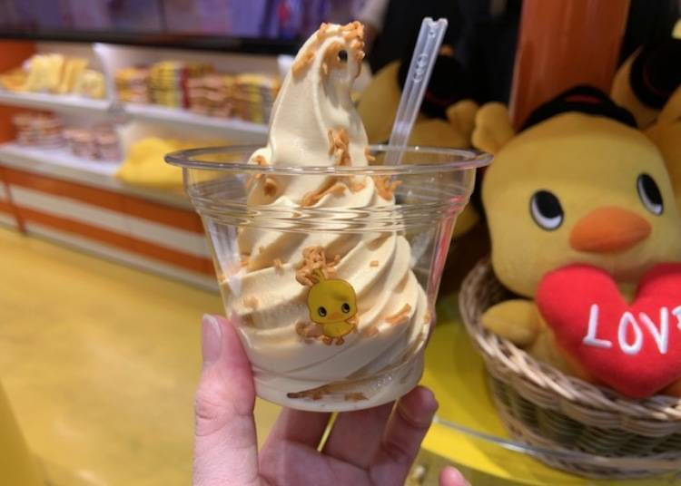

일본의 3대성 오사카성
일본의 3대성중 하나라 불리며 오사카의 상징인 오사카성 16세기 토요토미 히데요시가 일본 통일을 달성한후 권력을 과시하기 위해 지은 성 입니다. 완성당시 금박장식으로 뒤덮인 호화로운 모습이였으나 도쿠가와 이애야스가 도요토미 일족을 명말시킨후 재촉성을 통하여 지금의 모습이 되었습니다. 931년에 수복된 츠텐카쿠는 오사카 시민들의 기부로 지금의 모습이 되었어요. 일년에도 여러 번, 벚꽃시기 등에 라이트업 된답니다. 성과 성 주변의 공원은 계절별로 아름다운 꽃과 나무로 둘러싸여 많은 사람들이 찾고 있습니다. 오사카 구역은 오사카 비즈니스 파크(大阪ビジネスパーク)와 미츠이 아울렛 파크 오사카 츠루미(三井アウトレットパーク大阪鶴見)처럼 새로운 쇼핑 스폿으로도 인기를 모으고 있어요. 오사카의 지금과 옛날을 함께 맛볼 수 있는 곳이랍니다.
나날이 진화를 거듭하는 유니버설 스튜디오 재팬!
설립 후 100년이 넘는 시간 동안 전 세계인의 마음을 사로잡은 이름, 유니버설 스튜디오. 세계에 단 4개뿐인 유니버설 스튜디오 테마파크 중 우리에게 가장 익숙한 곳은 단연 오사카의 유니버설 스튜디오 재팬(약칭 USJ) 입니다다. 2001년 첫 개장 후 매년 수백만 명의 방문객을 맞이하며 간사이 지역을 대표하는 최고의 관광지로 자리 잡았습니다. 유니버설 스튜디오 재팬®은 오사카에 있는 헐리우드 영화 속 세계를 체험할 수 있는 테마파크에요. 「죠스」와 「쥬라기 파크 더 라이드」, 「윈딩 월드 오브 해리포터」 등, 영화 세계를 재현한 놀이기구가 인기랍니다.일본의 과거와 현재가 어울어 지는곳 돈토보리
도톤보리는 좁은 길과 뒷골목을 따라 셀 수 없을 정도로 수 많은 레스토랑과 바들이 즐비해있습니다. 다채로운 간판과 잘 꾸며진 입구는 눈을 부시게 하는 빛과 디자인의 교향곡을 만들어냅니다. 이 곳을 방문하는 사람들은 거대한 게와 복어 조형물 그리고 드럼을 연주하는 마네킹, 도톤보리 거리의 레스토랑들이 자랑하는 흥미진진한 간판들을 볼 수 있습니다. 이 곳에서 쿠이다오레의 진정한 의미를 경험할 수 있으며, 합리적인 가격으로 만족할 때까지 오사카 최고의 맛을 만끽 할 수 있습니다. 그리고 거리의 연주가들과 예술가들을 위한 "나니와워터프론트 극장가"가 현재 강을 따라 건설 중입니다. 완성되면 이곳은 도시와 강이 만나는 장소, 좀 더 활기차고 생명력 넘치는 오사카의 심벌로 거듭날 것입니다.오사카에서 꼭 먹어야하는 음식
미슐랭이 선정한 타코야끼 맛집의 '타코센'
아메리카무라에 있는 '코가류'는 '미슐랭가이드 2016'의 빕 고망 레스토랑(1인 5000엔 이하로 즐길 수 있는 레스토랑) 부문에 선정된 타코야끼 맛집. 이곳에서 꼭 추천하고 싶은 메뉴는 타코야끼 3개를 새우맛 센베이로 샌드한 '타코센베이(타코센)'입니다. 겉의 센베이가 바삭바삭하면서 안의 타코야끼는 부드러운 두 가지 매력을 한 번에 느낄 수 있어요. 소스, 마요네즈가 올라간 플레인 맛 말고도 치즈, 명란젓, 파 등 총 4종류를 판매하고 있어요. ※타코센은 평일에만 판매합니다.길가에서 먹을 수 있는 킹 크랩 숯불구이
움직이는 게 간판으로 유명한 게 요리 전문점 카니도라쿠(かに道楽)에서 판매 중인 킹 크랩의 숯불구이. 가게 앞에서 바로 구워주는 따끈따끈한 킹 크랩을 먹을 수 있어요. 게 요리를 먹고 싶은데 다른 음식들도 즐기고 싶은 분들은 이곳에서 킹 크랩을 드세요~
